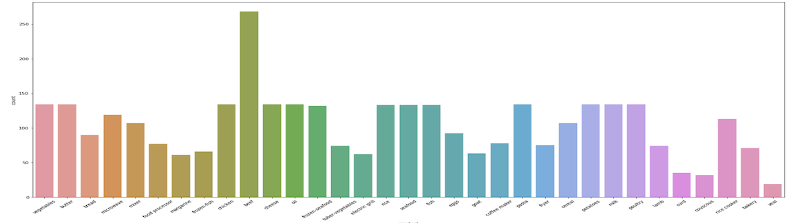

Cosmetible Product Classifications for Retailer Stores
Skills: Python, NLP, Data Cleaning, Data Visualization
Objectives: How description (in text format) of cosmetible products can be used to help retailer stores or other involving organizations to understand the price of similar product group? How can Purchasing Power Parity be automated to compare prices between stores, countries and regions?
Approach:
- Used product description in text format and applied supervised machine learning algorithm such as Naive Bayes and Random Forest to classify 2000 products into 33 product groups.
- Calculated unit price of each product and converted them into a standardized metric form.
- Performed statistical analysis (t-test) to compare prices between stores.
Results: Achieved approximately 73 percent accuracy rate on average in product classification using cross-validation method. That explains for every 100 products, we were able to correctly classified around 73 products.
This project can be briefly explained by the presentation down here.